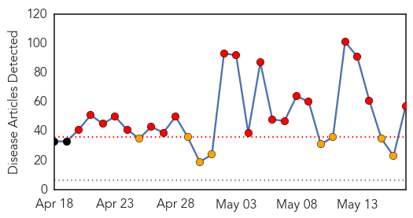
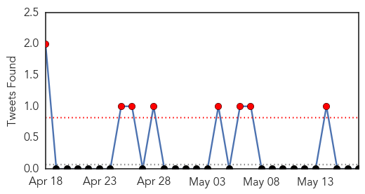
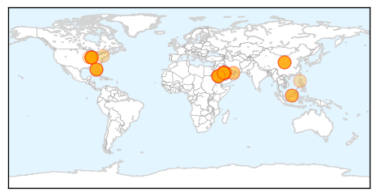

30 Day Trends
Web: 20 alerts, 8 warnings
Twitter: 3 alerts, 0 warnings
Top Articles:
- 1.000
- MERs virus: Infected with a handshake
- 1.000
- Silently among us: Scientists worry about milder cases of MERS
- 1.000
- Illinois man has MERS virus, didn't get sick
- 1.000
- Possible 3rd U.S. MERS case tied to Indiana patient
- 1.000
- Illinois resident who had contact with Indiana MERS patient tests positive for MERS coronavirus
- 1.000
- Illinois resident who had contact with Indiana MERS patient tests positive for virus
- 1.000
- CDC: MERS virus spread in United States, but second man not sick
- 1.000
- MERS virus spread in US, but 2nd man not sick
- 1.000
- 3rd MERS Virus Infection in US Reported in Illinois Man
- 1.000
- 3rd MERS Infection in US Reported in Illinois Man
- 0.999
- Health officials see possible 3rd MERS infection in U.S.
- 0.999
- First US MERS case spread disease
- 0.999
- Illinois man tests positive for MERS virus without falling ill
- 0.999
- UPDATE 1-Illinois man tests positive for MERS virus without falling ill
- 0.999
- US reports third case of MERS virus
- 0.999
- Third case of MERS confirmed in Illinois resident
- 0.999
- Illinois Resident Tests Positive for MERS After Contact with Indiana Patient
- 0.999
- MERS Spreads As Illinois Resident Tests Positive
- 0.999
- MERS Spreading in the U.S. as Illinois Man Tests Positive for MERS Virus Without Falling Ill
- 0.999
- CDC: First case of MERS infection transmitted inside the U.S.
- 0.999
- MERS virus spreads to U.S.
- 0.999
- CDC: First US MERS case likely passed virus to Illinois man
- 0.999
- MERS primer: what you need to know
- 0.999
- Illinois Man Tests Positive for MERS Virus without Falling Ill
- 0.999
- Health officials see possible 3rd MERS infection in U.S.
- 0.999
- Illinois man tests positive for MERS virus without falling ill
- 0.999
- First onward spread of MERS in North America
- 0.999
- Illinois resident tests positive for MERS but doesn’t fall ill — RT USA
- 0.999
- U.S. reports first case of local transmission of MERS: CDC - National
- 0.998
- Saudi Arabia reports 10 more MERS deaths
- 0.998
- CDC: Illinois man is 3rd reported case of MERS in nation
- 0.998
- Third US MERS Case Confirmed In Illinois, As Hospitals Prepare For Potential Viral Outbreak
- 0.998
- US man tests positive for Mers virus without falling ill
- 0.998
- MERS Virus Case Confirmed In Illinois, Doctors Worried About A ‘Typhoid Mary’ Outbreak
- 0.998
- Illinois man tested positive for MERS
- 0.998
- Second MERS case in the U.S.
- 0.998
- CDC: Illinois man is 3rd reported case of MERS in nation
- 0.998
- Concern for Hajj pilgrims as MERS virus spreads in Saudi
- 0.997
- Illinois man tested positive for MERS, but had only a few, mild cold symptoms
- 0.997
- Illinois man tests positive for MERS antibodies, likely contracted virus from Indiana patient
- 0.997
- WHO says that MERS is not currently a global threat
- 0.997
- Saudi Arabia reports 10 new MERS deaths
- 0.997
- CDC: First case of MERS infection transmitted inside the U.S.
- 0.997
- Third Person Tests Positive in the United States
- 0.997
- Illinois man tests positive for MERS virus without falling ill
- 0.996
- Saudi Arabia targets camels in bid to combat MERS
- 0.992
- CDC confirms Illinois resident infected with MERS
- 0.991
- Man Tests Positive For MERS Virus
- 0.982
- Illinois Resident Tests Positive For MERS
- 0.978
- Defiant Saudis 'Brave MERS' to Kiss Their Camels
Showing top 50 articles...
Top Tweets:
- 0.527
- RT: Illinois resident who had contact with Indiana MERS patient tests positive for MERS coronavirus. http://t.co/NRzD0nsNls
- 0.527
- RT: Illinois resident who had contact with Indiana MERS patient tests positive for MERS coronavirus. http://t.co/NRzD0nsNls
Web/News Articles
Tweets
Article Locations
Article Confidences